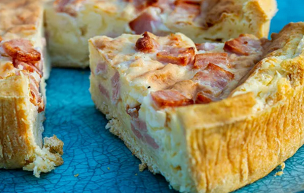

-Quiche de bacon y jamón york
receta de quiche de bacon y jamon york

Ingredientes
- 400ml de nata de cocinar
- 5 huevos
- 50g de bacon
- 50g de jamón york
- 100g de queso rallado
- masa para quiche
Elaboración (pasos)
- Extender la masa en el molde de horno
- en un bol, mezclar la nata, los huevos, el bacon y el jamón troceados y el queso
- hornear la masa sola a 180ºC 10'
- verter la mezcla dentro del molde con masa vacío
- cocer al horno 250ºC durante 20'
- comprobar que está cuajada
- desmoldar y servir
Volver